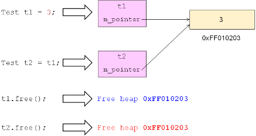

1，对象的构造在实际工程开发当中是相当重要的，C++ 中使用类就要创建对象，这 就涉及了对象的构造，本节课讲解对象的构造和内存操作方面的问题；
2，实际工程开发中，bug 产生的根源，必然的会有内存操作的问题，所以对象的构 造牵涉了内存的操作，则是课程的重点和难点；
3，两个特殊的构造函数（同类名相同的无返回值的可自动调用的函数，这里也就是 说明了没有赋值操作符函数）：
1，无参构造函数：
1，没有参数的构造函数；
1，没有参数的构造函数就是无参构造函数；
2，当类中没有定义构造函数时，编译器默认提供一个无参构造函数，并且其函数体为空（这是无参构造函数特殊之处）；
1，无参构造函数是必须要存在的，因为使用类就要创建对象，创建对象就涉及构造函数的调用，如果定义一个类，它里面没有任何构造函数时，为了保证能够使用这个类来创建对象，编译器为我们提供了一个默认的构造函数，并且让这个默认的构造函数函数体为空；
2，类中已经定义了一个构造函数（包括拷贝构造函数），编译器便不会为我们提供默认的无参构造函数；
2，拷贝构造函数：
1，参数为 const class_name& 的构造函数；
1，和对象的拷贝和复制相关；
2，const class_name& 参数出现在构造函数中，则必然是拷贝构造函数；
2，当类中没有定义拷贝构造函数时，编译器默认提供一个拷贝构造函数，简单的进行成员变量的值赋值；
1，类中只定义了无参构造函数后，任然会提供拷贝构造函数；
4，特殊的构造函数编程实验：
1，代码示例：
1 #include <stdio.h>
2
3 class Test
4 {
5 private:
6 int i;
7 int j;
8 public:
9 int getI()
10 {
11 return i;
12 }
13
14 int getJ()
15 {
16 return j;
17 }
18
19 /*Test(const Test& t) // 编译器默认提供；
20 {
21 i = t.i; // 编译器做的工作；
22 j = t.j;
23 }
24
25 Test() // 编译器默认提供；
26 {
27 }*/
28 };
29
30 class T // 这个类中至少有一个无参构造函数；
31 {
32 };
33
34 int main()
35 {
36 Test t; // 编译通过，C++ 编译器提供了无参的默认构造函数，即屏蔽的第二个函数，直接加载在类函数体后面的三行代码；
37
38 Test t1; // 这里打印随机值；
39 Test t2； // 这里打印随机值；
40
41 int i = 2;
42 int j = i; // C 语言中可以存在这样的初始化方式，面向对象也可以（要兼容 C 语言语法），用另一个对象初始化新定义的对象；
43
44 Test t2 = t1; // 这里打印相同的随机值，这里是对象的赋值，和前面用常量值的赋值来调用构造函数是不同的，前面调用的只是有参构造函数中的非拷贝构造函数，说到底还是构造函数的重载问题，只是这里重载的是对象，而上一节重载的是变量而已；
45
46 printf("t1.i = %d, t1.j = %d\n", t1.getI(), t1.getJ());
47 printf("t2.i = %d, t2.j = %d\n", t2.getI(), t2.getJ());
48
49 return 0;
50 }
2，实验结果说明：
1，编译器提供的构造函数只有两种，一种是无参构造函数，一种是拷贝构造函数；
2，编译器提供的拷贝构造函数仅仅是对成员变量进行简单的复制；
5，拷贝构造函数的意义：
1，兼容 C 语言的初始化方式；
1，这里初始化是对象的初始化，会牵涉到拷贝构造函数的调用；
2，利用已经存在的对象来创建另一个新的对象，进而使得这两个对象那个是一样的；
2，初始化行为能够符合预期的逻辑；
1，预期的逻辑是两个对象的状态是一模一样的；
6，初始化的构造函数调用问题总结：
1，初始化会调用构造函数；
2，构造函数的调用会以重载的方式调用，不管实参是类的对象还是变量；
3，为了兼容 C 语言中的赋值初始化方式，C++ 也提供了赋值初始化的方式；
4，对基础变量的重载调用普通的构造函数，对对象的重载调用拷贝构造函数（构造函数的一种特殊名称而已，但是编译器会在没有这个构造函数时候默认的创建这个函数）；
5，拷贝构造函数
7，拷贝构造函数的意义：
1，浅拷贝：
1，拷贝后对象的物理状态相同；
1，面向对象里面，最根本的还是会牵涉到内存问题；
2，浅拷贝使得对象的物理状态相同，单纯的进行值的复制；
3，复制过后，两个对象在内存当中的状态一模一样；
2，编译器提供的拷贝构造函数只进行浅拷贝；
1，简单的成员的复制，所以是浅拷贝；
2，深拷贝：
1，拷贝后对象的逻辑状态相同；
8，对象的初始化编程实验：
1 #include <stdio.h>
2
3 class Test
4 {
5 private:
6 int i;
7 int j;
8 int* p;
9
10 public:
11 int getI()
12 {
13 return i;
14 }
15
16 int getJ()
17 {
18 return j;
19 }
20
21 int* getP()
22 {
23 return p;
24 }
25
26 Test(const Test& t) // 手工定义拷贝构造函数；这样得到了深拷贝，因为已经深入到对应的堆空间的里面的值，所以叫深拷贝；
27 {
28 i = t.i;
29 j = t.j;
30 p = new int; // p 指向新的堆空间地址；p 的指针值不能够复制了，要到堆空间里面申请；
31
32 *p = *t.p; // 将指向地址当中的值重新指定；申请后将 t 对象中的 p 指针指向的值拿出来，赋值到 p 所指向的堆空间；
33 }
34 /*
35 Test(const Test& t) // 未有人为定义上面的拷贝构造函数的时候，编译器提供的拷贝构造函数；
36 {
37 i = t.i;
38 j = t.j;
39 p = t.p;
40 }
41 */
42 Test(int v)
43 {
44 i = 1;
45 j = 2;
46 p = new int;
47
48 *p = v; // 这个程序其构造函数仅仅是想将参数值存储到某个堆空间中，这个堆空间可以是不同的，因此拷贝构造函数也做同样的事就可以了；所以在写拷贝构造函数的时候，要看其构造函数要表达的意义，满足即可；
49 }
50
51 void free()
52 {
53 delete p;
54 }
55 };
56
57 int main()
58 {
59 Test t1(3);
60 /*
61 Test t = t1; // 未有提供拷贝构造函数的时候，下面打印的成员函数值 完全相同，包括指针的地址值；t 和 t1 的 p 指向了相同的堆空间的东西，这在对象释放堆空间中的内存时，内存错误；物理状态指的是我们的对象占据的内存当中他们的每个字节是否相同，此时物理状态相同；
62
63 printf("t1.i = %d, t1.j = %d, t1.p = %p\n", t1.getI(), t1.getJ(), t1.getP());
64 printf("t.i = %d, t.j = %d, t.p = %p\n", t.getI(), t.getJ(), t.getP());
65
66 t1.free();
67 t.free(); // 未有提供拷贝构造函数的时候，指向相同堆内存空间，重复释放堆空间，内存错误；
68 */
69
70 /*
71 Text t2 = t1; // t1 产生时其 p 指针指向堆空间的某个地址，使用 t1 初始化 t2 的时候，t2 的 p 指针也应该指向堆空间里面的内存地址，并且应该是一个不同的内存地址；这样不违背拷贝构造的意义，见提供的拷贝构造函数；触发如上所述的拷贝构造函数的调用，此时其实参为 t1；
72 */
73
74 Test t2(t1); // 同上面的代码，只是不同的表述，t1 会被参数 t 引用；下面打印的指针值不是相同的，但是 p 中指向的值是一样的，这样状态就一致了；此时逻辑状态相同，根据程序上下文，仅仅需要 t1 和 t2 中 p 指针所指向的值是一样的，这是逻辑状态；
75
76 printf("t1.i = %d, t1.j = %d, t1.p = %p\n", t1.getI(), t1.getJ(), t1.getP());
77 printf("t2.i = %d, t2.j = %d, t2.p = %p\n", t2.getI(), t2.getJ(), t2.getP());
78
79 printf("t1.i = %d, t1.j = %d, *t1.p = %d\n", t1.getI(), t1.getJ(), *t1.getP());
80 printf("t2.i = %d, t2.j = %d, *t2.p = %d\n", t2.getI(), t2.getJ(), *t2.getP());
81
82 t1.free();
83 t2.free();
84
85 return 0;
86 }
9，什么时候需要进行深拷贝？
1，对象中有成员指代了系统中的资源（唯一准则）：
1，成员指向了动态内存空间；
1，内存是系统资源之一；
2，成员打开了外存中的文件；
1，类的成员打开了系统当中的一个文件，它是系统资源之一；
3，成员使用了系统中的网络端口；
1，网络端口也是系统资源之一；
4，...；
2，问题分析：

3，一般性原则：
1，自定义拷贝构造函数，必然需要实现深拷贝；
1，要自定义拷贝构造函数，就要考虑是不是要做一个深拷贝；
2，如果是，要考虑深拷贝是否会在多个对象之间造成问题（比如多次释放堆空间）；
3，如果不是，要考虑为何要自定义拷贝构造函数而不使用编译器默认提供的拷贝构造函数；
10，数组类的改进编程实验：
1，IntArray.h 文件：
1 #ifndef _INTARRAY_H_
2 #define _INTARRAY_H_
3
4 class IntArray
5 {
6 private:
7 int m_length;
8 int* m_pointer;
9 public:
10 IntArray(int len);
11 IntArray(const IntArray& obj);
12 int length();
13 bool get(int index, int& value);
14 bool set(int index ,int value);
15 void free();
16 };
17
18 #endif2，IntArray.cpp 文件：
1 #include "IntArray.h"
2
3 IntArray::IntArray(int len)
4 {
5 m_pointer = new int[len]; // 在构造函数中申请了堆空间的内存，因此要给数组类提供一个拷贝构造函数；
6
7 for(int i=0; i<len; i++)
8 {
9 m_pointer[i] = 0;
10 }
11
12 m_length = len;
13 }
14
15 IntArray::IntArray(const IntArray& obj)
16 {
17 m_length = obj.m_length; // length 直接赋值；
18
19 m_pointer = new int[obj.m_length]; // pointer 要到堆空间申请内存，大小和初始化对象的一样，加上下面，完成了深拷贝；
20
21 for(int i=0; i<obj.m_length; i++) // 完成数组元素的赋值和复制；
22 {
23 m_pointer[i] = obj.m_pointer[i];
24 }
25 }
26
27 int IntArray::length()
28 {
29 return m_length;
30 }
31
32 bool IntArray::get(int index, int& value)
33 {
34 bool ret = (0 <= index) && (index < length());
35
36 if( ret )
37 {
38 value = m_pointer[index];
39 }
40
41 return ret;
42 }
43
44 bool IntArray::set(int index, int value)
45 {
46 bool ret = (0 <= index) && (index < length());
47
48 if( ret )
49 {
50 m_pointer[index] = value;
51 }
52
53 return ret;
54 }
55
56 void IntArray::free()
57 {
58 delete[]m_pointer;
59 }3，IntArray 类的使用：
1 #include <stdio.h>
2 #include "IntArray.h"
3
4 int main()
5 {
6 IntArray a(5);
7
8 for(int i=0; i<a.length(); i++)
9 {
10 a.set(i, i + 1);
11 }
12
13 for(int i=0; i<a.length(); i++)
14 {
15 int value = 0;
16
17 if( a.get(i, value) )
18 {
19 printf("a[%d] = %d\n", i, value);
20 }
21 }
22
23 IntArray b = a; // 用 a 对象初始化 b 对象；
24
25 for(int i=0; i<b.length(); i++)
26 {
27 int value = 0;
28
29 if( b.get(i, value) )
30 {
31 printf("b[%d] = %d\n", i, value);
32 }
33 }
34
35 a.free();
36 b.free();
37
38 return 0;
39 }
11，小结：
1，C++ 编译器会默认提供构造函数；
2，无参构造函数用于定义对象的默认初始化状态；
3，拷贝构造函数在创建对象时拷贝对象的状态；
4，对象的拷贝有浅拷贝和深拷贝两种方式：
1，浅拷贝使得对象的物理状态相同；
2，深拷贝使得对象的逻辑状态相同；